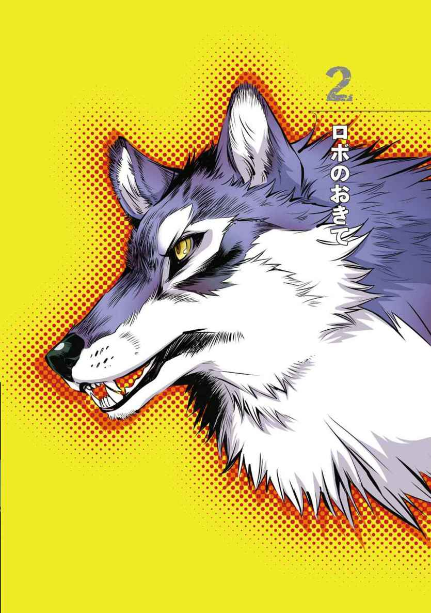
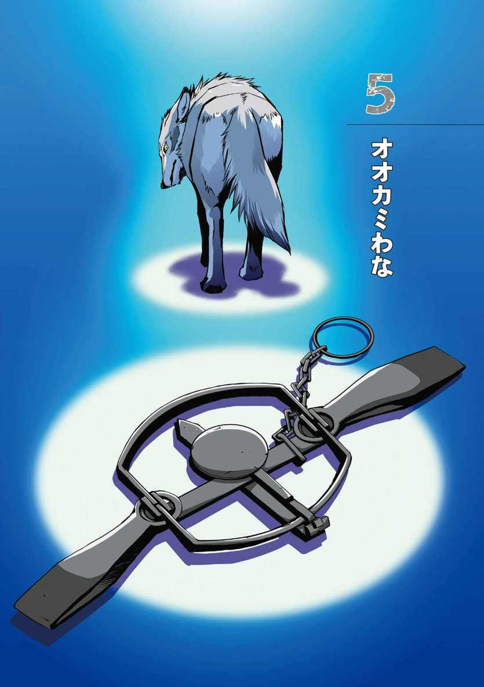
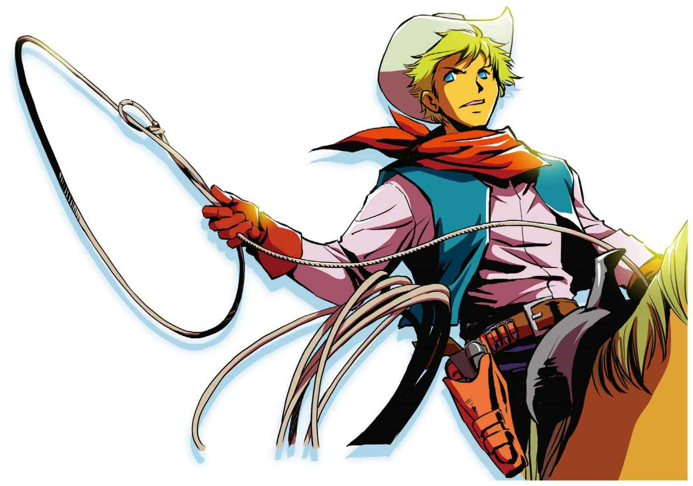

| １０歳までに読みたい世界名作8 シートン動物記「オオカミ王ロボ」 | |
| Unknown | |
| (2014) | |
シートン動物記
オオカミ王ロボ
もくじ
シートン動物記
オオカミ王ロボ
シートン動物記「オオカミ王ロボ」番外編
シートン動物記〈おまけのお話〉
アメリカのニューメキシコ州（＊１）北部に、カランポー平原とよばれる広々とした牧場地帯がある。なだらかな丘が、うねるように広がっていて、緑ゆたかな牧草地には、ヒツジや牛がたくさんむれている。
牧場地帯になくてはならないたいせつな水は、小川となって、いくすじも流れていて、それらはやがてカランポー川へと注いでいる。
このあたりの土地がカランポー平原とよばれているのは、このカランポー川があるからだ。
そして、この広い土地のすみずみにまで力をおよぼしている王様、それは、一頭のハイイロオオカミだった。
ばけもののように大きなそのオオカミのことを、地元の人たちは、ロボ、あるいはオオカミ王とよんでいた。
ロボはハイイロオオカミのむれをひきいて、何年もの間、カランポー平原をあらしまわってきたんだ。
このあたりのヒツジ飼いや牧場主たちは、だれもが、いやというほど、ロボのことを知っていた。
ロボが、しんらいしている仲間を引きつれてあらわれると、牛たちは、おそろしさでにげまわり、牧場主たちは、ものすごくくやしい思いをしながらも、どうすることもできず、ただ、あきらめるしかなかった。
ロボは、むれの中でもひときわ大きく、その体の大きさに負けない、悪がしこさと強さをかねそなえていた。
夜にひびきわたるロボの声は、ほかのオオカミのものとはぜんぜんちがっていて、はっきりと聞きわけることができる。
夜中にほかのオオカミがほえているのを聞いても、野宿（＊２）しているカウボーイ（＊３）やヒツジ飼いたちは、ほとんど気にもかけない。
けれども、ひとたび、地のそこからとどろく（＊４）ようなロボのほえ声が聞こえると、見はりたちはそわそわとしはじめて、夜が明けたら、家畜（＊５）にこっぴどいひがいが出ていることを、かくごしなくてはならないんだ。
ロボがひきいるむれには、そんなにたくさんのオオカミがいるわけじゃない。
これは、とてもふしぎなことだ。
ふつうオオカミは、力をつけて、なわばり（＊６）が広がれば広がるほど、たくさんの仲間を引きつれるものだから。
ロボは、少ない数でじゅうぶんだと思ったのかもしれないし、とてもあらっぽいせいかくのせいで、仲間がたくさんは集まらなかったのかもしれない。
たしかなのは、ロボが死をむかえるころには、たった五頭の仲間だけで、カランポー平原をおさめていたということだ。
このむれのオオカミたちは、どれもがふつうよりもずっと大きくて、中でも、ロボの次に力をもった副リーダーのオオカミは、とてつもない大きさだった。
とはいっても、大きさでもゆうかんさでも、ロボにはまったくかなわないのだが。
この二頭のリーダー以外にも、とてもりっぱなオオカミがいた。
一頭は真っ白な美しいオオカミで、地元の人たちはブランカとよんでいた。「白」という意味だ。ブランカは、ロボと愛しあっているメスのつれあい（＊７）らしい。
もう一頭は黄色いオオカミで、ものすごく足が速い。うわさによれば、にげ足が速いことで知られるレイヨウ（＊８）を、自分だけで何度もつかまえて、仲間のところに持ちかえったという。
このように、この地いきにくらすカウボーイやヒツジ飼いたちは、だれもが、ロボとその仲間たちのことをよく知っていたんだ。
ロボたちのすがたは、しょっちゅう見かけられたし、その声を聞くことはもっと多かった。
牧場主たちは、ロボには、ほとほとこまりはてていた、というわけさ。
ロボたちをころせるものなら、これほどありがたいことはなかっただろう。
カランポーの牧場主ならだれだって、ロボの仲間の一頭でもころしてくれるなら、かわりに牛何頭分もの賞金を、よろこんではらっただろう。
ところが、ロボたちは、まるでまほうの力をもっているかのように、あらゆるわなやどくを、まったく気にもせず、生きつづけていた。
ロボたちはハンターをばかにして、どくがしかけられたえさをあざわらい（＊９）、少なくとも丸五年の間、カランポーの牧場から牛をうばいつづけた。
うわさによれば、来る日も来る日も、牛を一頭ずつおそっていたという。
このうわさが正しければ、ロボたちは、いちばんいい牛ばかりを、これまでに二千頭近くもころしたことになる。
というのは、ロボたちはいつだって、むれの中の、いちばんいい牛を、いっしゅんで見わけておそう、ということでも有名だったからだ。
オオカミというものは、やせこけて、いつでもおなかをぺこぺこにすかせ、どんなえものにだって、すぐにとびつくといわれているけれど、ロボたちには、まったく当てはまらない。
ロボたちはいつも元気で、毛なみもつやつやしていて、食べるものにも、とてもこだわりがあった。
死んだ動物や、病気の動物には、さわりもしない。
それに、牧場主たちがころした動物にも、いっさい手を出さない。
ロボたちが毎日の食事としてえらぶのは、生まれて一年のメス牛の、やわらかい肉の部分だけだった。
年をとった牛は、オスでもメスでも見むきもしない。生まれてまもない子牛や子馬は、たまにはおそったけれど、わかすぎる動物の肉も、どうやら口に合わないらしい。
それにまた、ヒツジの肉があまりすきでないことも、よく知られていた。
それなのに、ロボたちは、遊びがわりに、しょっちゅうヒツジをころしていた。
ある冬の夜、ブランカと黄色いオオカミは、たった二頭で、二百五十頭ものヒツジをころした。
遊びでころしたのは、はっきりしている。
なぜなら、肉にはまったく手をつけていなかったのだから。
＊１ ニューメキシコ州...アメリカの南西部にある州。（物語ナビの地図参照）
＊２ 野宿...外でねながら、夜をすごすこと。
＊３ カウボーイ...牧場で牛などの世話をする男の人。
＊４ とどろく...鳴りひびくこと。
＊５ 家畜...人間が、食べたり、乳や毛皮をとったり、利用するために飼われている動物。
＊６ なわばり...同じしゅるいの動物が、自分の仲間以外を追いだして、その地いきを支配すること。
＊７ つれあい...夫婦の一方が、もう一方をさす言い方。
＊８ レイヨウ...ウシ科のほにゅうるい。足が細く、走るのが速い。
＊９ あざわらう...相手をばかにして、からかうようす。

ざんこくなロボたちのむれがもたらした大きなひがいの話なら、ほかにいくらでもあげられる。
毎年毎年、なんとか、このむれをたいじしようと、様々な新しいわなや道具がためされた。けれど、いくら必死になったところで、ロボたちが追いつめられることはなく、ますます力をたくわえていったんだ。
ロボをつかまえるために、たっぷりの賞金がかけられた。そして、賞金につられたハンターたちが、おそろしいほどの量の、どくを、いろいろと、くふうをこらしてしかけた。それでも、ロボは、いつでもちゃんとかぎわけて、引っかかることはなかった。

ロボがただ一つおそれていたのは、銃だ。
この地方の人間たちが、みんな銃を持ちあるいていることをよく知っていたので、ロボは決して人間をおそわないし、人間に近づいてこなかった。
ロボたちのむれには、おきて（＊１）があった。どんなに遠くであっても、昼間、人間のすがたを見かけたら、すぐさまにげる、というルールだ。
それともう一つ、自分たちでころしたえもの以外は、決して食べない、というルールもあった。そのおかげで、仲間たちはわなにかからず、何度も命びろいしてきたんだ。
それに、ロボは人間の手やどくのにおいをかぎわける力がとてもすぐれていたので、ますます、仲間たちは安全だった。
あるとき、一人のカウボーイが、たまたますぐ近くで、よく聞きなれたロボの声を耳にした。仲間たちをよびあつめる合図の声だ。
そのカウボーイは、そっと近づいてみた。
すると、オオカミのむれが、くぼんだ土地に、牛の小さなむれを追いつめて、まわりを取りかこんでいるのが見えた。
ロボは、少しはなれた丘の上にすわっている。ブランカとほかの仲間たちが、一頭のわかいメス牛を、むれから引きはなそうとしていた。
ロボたちのひょうてき（＊２）にされた牛だ。
ところが、牛たちは頭を外がわに向けて、小さくよりあつまって、てきに向かって、ずらりと角をならべるようにしていた。
おびえた牛が、むれの真ん中に、にげこもうとしたときぐらいにしか、かたい守りをくずすことはできない。
ブランカたちも、何度かすきをついて、えらんだ牛にきずを負わせていたけれど、その牛はまだまだ元気なようすだった。
ロボはどうやら、仲間たちのやり方に、がまんができなくなったらしい。
ロボは丘の上で立ちあがり、ひくい声をとどろかせると、牛のむれに向かって、すごいいきおいで走っていった。

牛のむれは、ロボのこうげきにすっかりおびえて、ばらばらになってしまった。
ロボは牛のむれの真ん中へ、まっしぐらにつっこんでいく。むれは、ばくだんがとびちるように、ちりぢりになってしまった。
ひょうてきとしてえらばれた牛は、遠くへにげようとしたものの、二十五メートルも行かないうちに、ロボに追いつかれてしまった。
ロボは首にかみつくと、力いっぱい引っぱって、その牛を地面にたたきつけるようにたおした。
そのいきおいははげしく、わか牛は四本の足を空に向けてひっくりかえり、頭からくずれおちた。ロボもいっしょに、とんぼがえり（＊３）を打つようなかっこうになったけれど、すぐに体せいを立てなおす。
そこへ、ロボの仲間たちがいっせいにおそいかかり、このあわれなわか牛を、あっというまにころしてしまった。
ロボがやったのは、ねらったえものをたおすところまでで、ころすときには手を出さなかった。
それはまるで、仲間のオオカミに、
「おまえたちも、もたもたしないで、こんなふうにやってみたらどうなんだ。」
とでも、いっているようだったという。
じっと見ていたカウボーイは、大声を上げながら、馬でかけつけた。
オオカミたちは、その声を聞くと、たちまち、すがたを消した。
そこでカウボーイは、持っていたどく薬のストリキニーネを、ころされた牛の三か所にしこんで、その場を立ちさった。
牧場主たちの間では、ロボをおそれる気持ちが年々強くなっていって、ロボをつかまえるためにかけられた賞金も、どんどん高くなっていた。最後には、千ドル（＊１）にまで、たっしたんだ。
これは、けたちがいの賞金だ。人間の悪党でも、そんな大金がかけられる者は、めったにいるもんじゃない。
その賞金につられて、ある日、タナリーという名の、テキサス（＊２）の森林かんし人（＊３）が、馬に乗ってカランポーにやってきた。
タナリーは、オオカミ狩りにひつようなすばらしい道具をそろえていた。最高の銃に、最高の馬たち、そして、最高のウルフハウンドたちだ。ウルフハウンドとは、オオカミ狩りせんようの大がたの猟犬なんだ。
遠くはなれたテキサスの平原で、タナリーとその猟犬たちは、何頭ものオオカミをころしてきた。
タナリーは、何日かのちには、かならずロボの首を自分の馬の鞍（＊４）からぶらさげていることを、うたがっていなかった。
夏のある朝、まだうす暗い中、タナリーたちは元気よく、狩りへとでかけていった。
出発してすぐに、猟犬たちは、ロボのむれのにおいをかぎつけて、うれしそうに鳴きはじめた。
三キロほど進むと、カランポーのオオカミたちが遠くに見えてきた。猟犬たちはますます足を速めて、さらに、いきおいよく追いかけはじめる。
オオカミ狩りの猟犬の仕事は、オオカミたちを追いつめ、取りかこんで、にがさないようにすることだ。そこに、ハンターが馬で乗りつけて銃でうちころす。
これは、広々と開けたテキサスの平原では、そんなにむずかしいことではない。
ところが、カランポー平原のふくざつな地形では、そうかんたんにはいかない。
ロボもよくわかっていて、自分たちのなわばりを注意深くえらんでいた。
カランポー地方では、ごつごつとした岩場や谷間が、平原のあちこちに横たわっている。
ロボたちはすぐに深い谷間の一つを横ぎって、馬に乗ったタナリーをかんたんにおきざりにしてしまった。馬は、急なしゃ面の上り下りが苦手だからだ。
そして、ロボの仲間たちが、そこでばらばらにちったので、犬たちもばらばらになってしまった。
遠くはなれた場所で、またロボたちのむれが集まったときには、犬の数はへっている。今や数で上まわるロボたちが、今度は追いかけるがわにまわって、犬たちをころしたり、大けがを負わせたりした。
その夜、タナリーが犬たちを集めてみると、帰ってきたのは、たくさんいたうちの、たった六頭で、そのうちの二頭は、ひどいけがを負っていた。
タナリーはそのあとも、二回にわたってオオカミ王ロボをつかまえようとしたけれど、どちらのときも、一度目よりも、もっとみじめな結果に終わった。
最後の狩りのときは、タナリーのいちばんいい馬が、ころんで死んでしまった。
すっかりいやになったタナリーは、すごすごとテキサスへ帰っていった。
そして、ロボは、今まで以上に、すき勝手にカランポーをおさめることになる。
次の年、べつの二人のハンターがやってきて、なんとか賞金をものにしようとした。
どちらのハンターも、この悪名高いオオカミをしとめられると、自信まんまんだった。
一人目は、カランポーの農場主、ジョー・キャロンという男だ。これまでにだれもやらなかった方法で、新しく発明されたばかりのどくをしかける、というやり方をとった。
もう一人は、ラローシュという名のフランス系カナダ人で、やはり、どくを使ったが、ちょっとしたじゅもんとまほうも利用した。というのも、ロボはただのオオカミではなく、伝説のまもの「オオカミ人間」だとしんじていて、ふつうのやり方ではころせないと考えていたからだ。
しかし、ずるがしこく調合したどくも、じゅもんも、まほうも、このいだいなオオカミ王ロボには、なんのききめもなかった。
ロボは、それまでとなんのかわりもなく、カランポー一帯を歩きまわり、今までどおり、毎日えものにありついた。
何週間もすぎて、二人のハンター、キャロンとラローシュは、すっかりしょげかえって、立ちさった。
ロボをつかまえることができなかったジョー・キャロンは、そのあとの春から夏にかけて、さらに、大はじをかかされることになる。
いだいなオオカミ、ロボは、ただ、てきをばかにしていただけではなく、自分自身にぜったいてきな自信をもっていて、それを人間に見せつけるようなことをしてみせた。
キャロンは、カランポー地方の、絵にかいたような美しい谷間に、小さな農場を持っていた。ロボとつれあいのメスは、その谷間のキャロンの家から、ほんの一キロほどしかはなれていない岩場をすみかにえらび、その年、そこで家族を育てていたんだ。
ロボたちは、夏の間中そこですごして、キャロンの牛やヒツジ、犬たちをころし、キャロンがしかけたどくやわなを、ばかにするように、岩場のどうくつでぬくぬくとくらしていた。
キャロンは、ロボたちをけむりでいぶしだそうとしたり、ダイナマイトでふきとばそうとしたりと、いろいろ知恵をしぼってみたものの、何一つうまくいかなかった。
ロボたちは、いつもきず一つ負わずに、楽々とにげて、キャロンの家畜をおそいつづけた。
「あのやろうは、去年の夏の間中、あそこに住んでやがったんだ。」
キャロンは、次の年、岩場を指さして、そういった。
「なのに、おれは、ヤツに何一つできなかった。ヤツにしてみれば、おれはただのあほうにしか見えなかったろうな。」
＊１ 千ドル...当時は、家を一軒買えるくらいの大金だった。
＊２ テキサス...アメリカの南部にある州。ニューメキシコ州のとなりにある。（物語ナビの地図参照）
＊３ 森林かんし人...先住民や野生動物から開拓地を守っていた人。
＊４ 鞍...人が馬に乗るときに、馬のせなかにつける道具。
ここまでの話は、どれもこれも、カウボーイたちから聞いたものばかりで、正直いって、ぼく、シートンは、ぜんぜんしんじていなかった。
ところが、一八九三年の秋に、ぼくはこのずるがしこいオオカミと、ちょくせつ対決することになったんだ。
そして、ロボのことは、ほかのだれよりも、くわしく知るようになる。
愛犬ビンゴがまだ生きていたころ、ぼくもオオカミ狩りをしていたことがある。
しかし、そのあと、すっかりちがう仕事をするようになり、つくえといすにしばりつけられているような毎日をすごしていた。
ぼくは、気分をかえたかった。
ちょうどそんなころ、カランポーで牧場主をしている友だちから、手紙がとどいたというわけなんだ。
ニューメキシコに来て、牛どろぼうたちをたいじしてほしいという手紙だ。
ぼくはよろこんで、このまねきを受けることにした。
ぼくは有名なオオカミ王に早く会いたくて、大いそぎでカランポーへやってきた。
着いてからしばらくは、この地いきのことをよく知るために、馬に乗って、あちこちを歩きまわった。
ぼくをあんないしてくれた人は、ところどころで止まっては、死んだばかりで、まだ皮がついたままの牛の死体を指さして、こういったものさ。
「ほら、あれもヤツの仕業だよ。」
カランポーを歩きまわってみた結果、こんなにでこぼこした土地では、猟犬と馬とでは、ロボたちを追いつめることはむりだということが、はっきりわかった。
だとしたら、どくとわなを使うしかない。そのときには、じゅうぶんな大きさのわなを持っていなかったので、まずはどくを使うことにした。
この「オオカミ人間」をつかまえるために、ぼくは百通りものやり方をためしてみた。でも、それについて、一つ一つくわしく書くつもりはない。
ただ、ストリキニーネやヒ素、シアン化物や青酸といったどくの組みあわせで、ためさなかったものは、何一つないほどだった。
どくをしこむ肉も、あらゆるしゅるいをためしてみた。
それなのに、来る日も来る日も、朝になって馬で走りまわるたびに、どれ一つうまくいったものがないことを、思いしらされつづけたんだ。
このオオカミ王には、とてもかなわない。
ロボが、どれほどかしこいのかをしめす例を一つだけあげておこう。
ぼくは、ベテランのわな猟師のわざをヒントに、あるえさを作った。それは、ころされたばかりのわか牛の腎ぞうのあぶら身にチーズをとかしてまぜて、金ぞくではない、とくべつななべで、にこんだものだ。切るときには、ほねで作ったナイフを使った。人間が使う、金ぞくのにおいがつくのをさけるためだ。
このえさがさめてかたまると、いくつかに切りわけて、それぞれにあなをあける。
そして、においがもれでないカプセルに、もうどくのストリキニーネとシアン化物をたっぷり入れて、あなにつめた。そのあなは、チーズでふたをした。
これらの作業は、死んだばかりで、まだあたたかい、わか牛の血を、たっぷりしみこませた手ぶくろをはめて、行った。
自分の息がふきかかるのも、しんちょうにさけた。
すべてのじゅんびが整うと、ぼくはそれを、血をぬりたくった生皮のふくろにつめた。
それから牛の肝ぞうと腎ぞうをロープの先にくくりつけて、馬に乗って、平原を引きずりまわした。こうしておけば、ロボたちは、においにつられてやってくるだろう。
そうやって、四、五百メートルごとに、どくをしこんだえさを落として、十五キロほども歩いた。もちろん、自分の手がちょくせつふれないように、いつもじゅうぶんに注意をはらいながら。
ロボがそのあたりの牧場にすがたをあらわすのは、毎週、週のはじめごろが多い。週の後半になると、どうやらシエラ・グランデ（＊）のふもとあたりへ、出かけているらしいことがわかっていた。
ぼくたちが、どくをしこんだえさをまいたのは、月曜日。
その夜、ぼくたちがねむろうとしていたところに、ロボのひくくて深いほえ声が、とどろきわたった。
それを聞いて、カウボーイの一人がぽつりといった。
「ほら、あいつがやってきた。うまくいくかな。」
次の日の朝、どうなったのかを少しでも早く知りたくて、ぼくは馬に乗って、いそいででかけた。
ぼくたちはすぐに、〝どろぼうたち〟のできたての足あとに出くわした。
ひきいているのは、もちろんロボだ。
ロボの足あとは、一目でわかる。
ふつうのオオカミの前足の大きさは、たて十一センチほど、大きなオオカミでも十二センチほどだ。
ところがロボの足あとは、何度はかっても、つめからかかとまで十四センチはあった。
あとになって、体全体も、その足にふさわしい大きさだということがわかる。四本足で立っているときの、かたまでの高さが九十センチほど、体重は七十キロほどもあったんだ。
だから、ほかの仲間たちにふみあらされてはいても、ロボの足あとは、はっきりと見わけがついた。
ロボたちは、ぼくが引きずった牛の内ぞうのあとを、すぐに見つけたようだ。そして、いつものようにそのあとを追っている。
ロボが最初のどく入りのえさに近よって、くんくんとにおいをかぎ、最後には食べたようすが、目にうかぶようだった。えさは、そこには、のこっていなかったからね。
それを見て、ぼくはうれしさをかくせなかった。
「とうとう、やったぞ。」
ぼくは、そうさけんだ。
「死体は、この近くで見つかるはずだ。」
地面についたロボの大きな足あとを、食いいるように見つめながら、馬を速足で進める。
足あとは、二つ目のえさにまで、つづいていた。
そのえさも、消えていた。
ぼくは、うれしくてたまらなかった。
ロボはかくじつに死んだだろうし、ほかにも、仲間の数頭は死んでいるかもしれない。
ところが、ロボの大きな足あとは、さらに先へとつづいている。
ぼくは、馬の鞍からこしをうかせて、草原を遠くまで見まわしてみたけれど、死んだオオカミなんか、一頭も見あたらない。
ぼくは、ふたたび足あとを追った。
三つ目のえさのところにやってくると、やはりそれも消えている。
オオカミ王の足あとは、さらに四つ目へとつづいていた。
そこまで行って、ようやくぼくは、ロボがえさを食べていなかったことを思いしらされた。
ロボはただ、口にくわえて、運んできただけなんだ。
四つ目のえさの上に、それまでの三つのえさをつみあげて、ぼくをばかにするように、あたり一面に、ふんやおしっこをまきちらしていた。
そのあとロボは、牛の内ぞうを引きずったコースからそれて、いつもどおり、えものをさがしにいってしまったようだった。
安全に守りとおした、仲間とともに。
＊ シエラ・グランデ...ニューメキシコ州北東部にある山。

そうこうしているうちに、ロボのあくまのような、ずるがしこさを思いしることになった。
ロボの仲間たちには、少なくとも一つの「お楽しみ」があった。それは、めったに食べることはないくせに、ただ、ヒツジを追いかけまわしてころすというものだ。
平原を歩きまわるヒツジ飼いは、ふつう、千から三千頭のヒツジのむれを、一人から数人で守っている。
夜になると、ヒツジたちをあたりでいちばん安全な場所に集め、さらに安全を守るために、むれの両はしに一人ずつ、ヒツジ飼いがねむる。
ヒツジというのはあまり頭がよくなくて、ほんのちょっとしたことにもおどろき、めちゃくちゃに走りだしたりする。
けれども、一つだけ、役にも立つし、弱点にもなる性質をもっている。それは、リーダーにどこまでもついていくという性質なんだ。
それを利用して、ヒツジ飼いたちは、むれの中に五、六頭のヤギをまぎれこませておくことがよくある。
ヒツジたちは、ヤギが、とてもかしこいことをよくわかっていて、夜に、何かきけんなことが起こると、ヤギのまわりに集まってくる。
そのおかげで、ヒツジたちは、めちゃくちゃに走りだすこともなく、安全を守るのもむずかしくないというわけだ。
でも、いつもそううまくいくわけじゃない。
冬のはじめごろ、ある夜、二人のヒツジ飼いは、オオカミにおそわれて、さわぎだしたヒツジの気配で目をさました。
ヒツジたちはヤギのまわりに集まっていた。ヤギたちは頭がいいし、おくびょうでもない。足をふんばって、オオカミと対決する気まんまんだ。
しかし、相手が悪かった。このオオカミたちのリーダーは、ふつうのオオカミではなかったんだ。
「オオカミ人間」ともいわれた、まもののようにかしこいロボは、ヤギが、ヒツジたちの心のささえになっていることを、よくわかっていた。ヒツジ飼いと同じくらいに。
そこで、ロボは、むれかたまったヒツジたちをとびこして、まずヤギにおそいかかり、あっというまにヤギを全部ころしてしまった。
すると、ヒツジたちはたちまちあわてふためいて、四方八方へとちりぢりに走りだしてしまった。
そのあと何週間もの間、ほとんど毎日のように、こまった顔をしたヒツジ飼いたちが、ぼくにたずねてきた。
「どこかで、うちのまよいヒツジを見かけなかったですかね。」
ぼくはいつも「ああ、見たよ」としか、答えられなかった。
あるときの返事はこうだ。
「ダイアモンド・スプリングズで、五、六頭の死体を見つけたよ。」
またあるときには「マルパイ台地のあたりで、何頭かのむれが走ってるのを見たよ」とか、「ぼくは見てないけど、フアン・メイラが、セドラモンテで、おととい、二十頭ほどの、ころされたばかりのヒツジを見かけたといってたよ」と、答えたりもした。
そうするうちに、ようやくオオカミわながとどいた。
ぼくは、カウボーイを二人やとって、まるまる一週間かけて、そのわなをしかけていった。
ぼくたちは、いっしょうけんめいはたらいた。少しでもロボをとらえるのに役に立ちそうなことなら、なんでもためしてみた。
わなをしかけたよく日、前の日にしかけたわなのようすをたしかめるために、ぼくは馬で見まわりにでかけた。
すぐに、ロボがわなからわなへと走りまわっている足あとを見つけた。
土の上についたその足あとから、その夜、ロボが何をしていたのかが、手に取るようにわかった。
暗やみも、わなが注意深くかくされているのもなんのその、ロボは、たちまち一つ目のわなを見つけたようだった。
近づこうとする仲間を止めて、ロボはしんちょうにわなのまわりを引っかいている。
やがて、わなだけではなく、わなを固定するための丸太も、わなと丸太をつないでいるくさりも、すべてほりだしている。
そして、わなを丸見えのままにして、その場をはなれていた。そのほかの、十以上のわなすべても、同じようにしていったんだ。
でも、ぼくもすぐに気づいたことがあった。
ロボは通り道で何かあやしいものを見つけたしゅんかん、立ちどまって、わきにそれて歩く行動をとるということだ。
そこで、新しい作戦を思いついた。
ぼくは、わなをＨのかたちにしかけることにしたんだ。つまり、オオカミの通り道にそって両わきにわなをしかけ、さらに、Ｈの真ん中の横ぼうにあたる場所にも、もう一つしかけてみた。
ところがまもなく、またしても、この作戦がうまくいかなかったことを知ることになる。
ロボは、通り道の両わきのわなの間を、すたすたと歩いてくる。そのまま行けば、道の上にしかけたわながまっている。けれど、ロボは、そのわなの前までくると、ピタッと足を止めていた。
いったい、どうして気づいたんだろう。野生動物を見まもっている天使が、ロボにささやきかけたのかもしれない。
立ちどまったロボは、右へも左へも、一センチも足を動かさず、ゆっくりしんちょうに、自分の足あとを後もどりしていた。
きけんな場所からはなれるまで、一歩一歩、自分がのこした足あとを、ぴったりそのまま、後ろ向きにたどっているんだ。
そして、二列のわなの片がわを歩きながら、前足で土くれや石ころをとばして、すべてのわなのばねを、はじかせてしまっていた。
このあとも、ロボは何度も同じように、わなをくぐりぬけた。ぼくが、いくらくふうをこらし、何倍も注意深くしかけても、ロボはまったく、だまされなかった。
こんなに頭のいいロボは、決してしっぱいなんかしないんじゃないかと思ったし、いつまでもすきなように、家畜をころしつづけるんだろうとも思ったぐらいだ。
けれども、ついにはロボも、仲間のためにほろびることになってしまった。
ロボだけならば、だれにもすきを見せることなどなかっただろう。でも、ロボは、しんらいしていた仲間のうっかりミスのせいで死んだヒーローたちの、仲間入りをすることになってしまったんだ。
＊１ コヨーテ...オオカミににているが、やや小がたの肉食動物。
＊２ がいじゅう...人間や家畜、農作物にひがいをあたえる動物。
一度か二度だけれど、このカランポーのオオカミの仲間には、何かうまくいっていないところがあるんじゃないか、と思うことがあった。
それは、ちょっとした「みだれ」のようなものだった。
たとえば、ときどき、ロボより小さいオオカミが、ロボの前を歩いて、その足あとをのこしていたりするような場面だ。
カウボーイに教えてもらうまで、どうしてそんなことが起こるのか、ぼくにはよくわからなかった。
カウボーイは、こういったんだ。
「きょう、あいつらを見かけたよ。すき勝手に歩いてたのは、ブランカだったよ。」
そのしゅんかん、ぼくはなるほどと思って、こういった。
「やっぱり、ブランカはメスなんだね。もし、オスのオオカミがそんなことをしたなら、ロボはすぐにころしてしまうだろうから。」
そこから、ぼくは新しい作戦を思いついた。ロボではなく、その仲間をねらう作戦だ。
まず、わか牛を一頭ころして、その死体のまわりに、はっきりとわかるように一つ二つのわなをしかけた。
それから、牛の頭を切りおとして、少しはなれた場所においた。食べられない牛の頭になど、オオカミは見むきもしない。そして、そのまわりに、強力な鉄のわなを六こもしかけておいた。
もちろん、せいいっぱい注意をはらって、手のにおいがつかないようにもした。
その作業をするときには、ぼくの手も、ブーツも、道具も、しんせんな牛の血でぬらした。
わなを土にうめおわると、そのあたり一面にコヨーテの皮をこすりつけ、わなの上を横ぎるように、コヨーテの足で足あとをたくさんつけておいた。
最後には、草むらから少しだけはなれた場所に、牛の頭をおいた。頭からふきだしたように見えるように、頭のまわりにも血をまいておいた。頭と草むらの間のせまい場所に、いちばんいいわなが二つ、うめられ、わなは、くさりで頭とつないであるというしくみだ。
オオカミというものは、何かの死体のにおいをかぎつけたら、かならず調べようと近づく習性をもっている。
食べるつもりなんかないときでも、そうだ。
ぼくはその習性を利用して、ロボたちの仲間をなんとかだましてやろうと考えたんだ。
牛の体のほうにしかけたわなには、ロボはまちがいなく気づいて、仲間を近よらせないようにするだろう。
でも、ぼくが期待をかけているのは頭のほうだ。というのも、頭は用がないものとして、ほうりなげられたように見えるだろうから、ロボもゆだんするかもしれない。
次の日の朝、ぼくはわくわくしながら、いそいで、わなを調べにいった。
とうとう、やったぞ！
そこには、ロボたちの足あとがあった。
そして、牛の頭とそこにつないでいたわなは、なくなっていた。
いそいで調べてみると、牛の肉のほうには、ロボが近よらせないようにしたあとがあった。
けれども、一頭の体の小さいオオカミが、はなれた場所においてあった頭に近づき、わなの一つにかかったようだ。
ぼくたちは、その足あとを追いかけた。
すると、二キロもいかないうちに、そのわなにかかった不運なオオカミがいた。それは、ブランカだった。
ブランカは二十キロをこえる牛の頭を引きずりながらも、馬に乗らずに走っていた、ぼくの相ぼうを引きはなした。
けれども、ブランカが岩場にさしかかったところで、ぼくたちは追いついた。
牛の角が岩の間にしっかりとはさまって、身動きが取れなくなってしまっていたんだ。
ブランカのようにきれいなオオカミを、ぼくはそれまでに見たことがなかった。
つやつやとした美しい毛皮は、ほとんど白に近い色をしていた。
ブランカは、ふりむいて歯をむいた。
そして、仲間に向かって、谷中にひびきわたるような長い遠ぼえの声を上げた。
遠くの丘の上から、ひくい遠ぼえがこたえた。ロボの声だ。
ブランカが上げた声は、それが最後だった。
ブランカは、息のつづくかぎり全力で、ぼくたちとたたかわなくては、ならなかったからだ。
そのあとには、悲しい場面が待っていた。
しかたのないことだった。
そのときよりも、今になって思いだすほうが、ずっとつらく感じる場面だ。
ぼくたちは、あわれなブランカに向かって、おのおの投げなわを投げた。
そして、それぞれの馬を反対の方向に歩かせて、なわを引いた。
やがて、ブランカの口からは血がふきだした。
目はどんよりとくもり、四本の足はかたくこわばり、ついには、どさりとたおれた。
ぼくたちは、ブランカの死体を馬に乗せて、家に向かった。
ロボの仲間に、はじめて一発食らわせたと、ぼくたちは大よろこびだった。
ブランカをしとめている間も、家に向かって馬を走らせている間も、遠くをうろつきまわっているロボのほえ声は聞こえていた。
ロボは、必死で、ブランカをさがしているようだった。ロボは、決してブランカを見すてたわけではない。
けれども、ぼくたちに気づいたロボは、ブランカを助けにかけつけることは、できなかったんだろう。
それほどまでに、ロボは、ぼくたちの銃をおそれていたんだ。
その日は一日中、さまよいあるくロボの悲しい声が聞こえていた。ぼくは、カウボーイたちの一人にこういった。
「これでようやく、ブランカとロボが、愛しあっていたことが、ほんとうによくわかったよ。」
日がくれるにつれて、ロボは、ねぐらのある谷間に向かっているのがわかった。
ロボの声が、どんどん近づいていたからだ。
その声は、ほんとうに悲しそうだった。それまでのように、大きくも、あらあらしくもなく、長くのばした、すすり鳴きのような声だった。
まるで、「ブランカ！ ブランカ！」と、よびかけているように。
その夜、ロボは、ぼくたちがブランカをつかまえた場所の近くまで、やってきていた。
そして、ロボはとうとうブランカの足あとに気づいたようだった。
ついにブランカがころされた場所をつきとめたとき、ロボはむねがはりさけそうな鳴き声を上げた。聞いているのもつらいぐらいだった。それは、とてもしんじられないような、悲しげな声だった。
ものごとにはあまり動じないカウボーイたちでさえ、その声を聞いて、こういった。
「オオカミが、あんなに悲しそうに鳴くのは、はじめて聞いたよ。」
そこで何が起こったか、ロボはまちがいなく気づいたようだ。
ブランカが死んだ場所は、あたり一面、血だらけだったんだから。
それから、ロボは馬のあとを追って、牧場に近づいてきた。
ブランカを見つけようとしたのか、仕返しをするつもりだったのかはわからない。
でも、けっきょくは、仕返しをえらんだ。
運悪く外にいた番犬が、ドアからほんの五十メートルほどのところで、ばらばらに引きちぎられていたんだ。
ロボが、一頭だけでやってきたのは、まちがいない。
次の日の朝、足あとは一頭分だけしかなかったから。
そして、ロボは、でたらめにあたりを走りまわっていた。いつものロボなら決して、そんなことはやらないだろう。
そんなこともあるんじゃないかと期待して、ぼくは牧場のあちこちに、あらかじめ、わなをたくさんしかけておいた。
あとになって、ロボがそのうちの一つにかかっていたことがわかった。それでも、ロボは力ずくで足を引きぬいて、そのわなをほうりなげていっていた。
ブランカの死体をその目でたしかめるまで、ロボはきっと、牧場から遠くへは、はなれないだろうとぼくは思っていた。
それで、なんとしても今のうちにロボをつかまえようと、必死でがんばった。ロボがこの近くから立ちさってしまう前じゃなきゃだめだし、ロボがいつもとはちがう、すきだらけの間じゃなきゃだめだ。
気づくのがおそかったけれど、ブランカをころしてしまったのは大しっぱいだった。
もし、ブランカを生きたまま「おとり」に使っていたら、きっとその次の日の夜までには、ロボをつかまえることができただろう。
ぼくは、集められるだけのわなを集めた。
けっきょく、全部で百三十こもの、がんじょうなオオカミわなが集まった。
それらをすべて、谷間へとつづくロボの通り道のあちらこちらに四つ一組でしかけていった。
わなはそれぞれ一つずつ、丸太につながれている。そして、その丸太を一つずつ、べつべつの場所にうめた。わなと丸太をうめるとき、ぼくは草や土を注意深く取りのぞいて、もうふに集めた。
わなと丸太をうめたあとに、それらの草や土を元にもどす。
こうしておけば、人間の手がくわわっているようには見えないはずだ。
わなをしかけおえると、ぼくはあわれなブランカの死体を、わなをしかけた場所のあちこちで引きずりまわした。
さらには、牧場のまわりをぐるぐる引きずって、死体のあとと、においをつけていった。
そして最後に、ブランカの足を一本切りおとし、それで、わなの上を横ぎるように足あとをつけた。
ぼくはできるかぎりの注意をはらい、知っているかぎりのくふうをこらして、夜おそくまでがんばった。
あとはどうなるか、待つだけだ。
夜中に一度、ロボの声を聞いたような気がした。
でも、気のせいかもしれない。
次の日、ぼくは馬で歩きまわった。
けれども、北の谷につづく道を全部調べおわる前に、夜になってしまった。
何一つ、かわったことはなかった。
夜ごはんを食べているとき、カウボーイの一人がいった。
「けさ、北の谷で牛たちが大さわぎしてたんだ。何かが、わなにかかったのかもしれないな。」
次の日の午後、教えられたその場所に近づくと、地面から、はい色のばかでかい動物が立ちあがるのが見えた。
必死でにげようとするその動物は、がっちりとわなにつかまったカランポーのオオカミ王、ロボだった。
あわれな英雄ロボは、愛するブランカをさがしつづけた。そして、死体を引きずったあとを見つけると、いつもの注意深さをすべてすてさり、あとを追い、待ちかまえていたわなに、とらえられてしまったというわけだ。

ロボは、四本足すべてをわなにはさまれて、横たわっていたに、ちがいない。まったく身動きできないじょうたいなのだから。
ロボのまわりには、たくさんの牛の足あとがついていた。
落ちぶれた王をばかにしようと集まってきたくせに、こわいものだから、近づきすぎずにまわりをかこんでいたようだ。
丸々二日間、ロボはそこに横たわっていたのだろう。もがきつづけ、つかれはてていた。
それでも、ぼくが近づくと、ロボはせなかの毛をさかだて、うなり声を上げて、起きあがった。
そして、ひくいほえ声を谷中にとどろかせた。ロボは最後に、仲間たちに助けをもとめたんだ。
しかし、その声にこたえるものはなかった。
追いつめられ、ひとり取りのこされたロボは、最後の力をふりしぼって、ぼくに向かってこようとした。
でも、そんなことはできない。わなの一つ一つが百三十キロほどもあって、四本足のすべてに、大きな鉄の歯が、がっしりと食いこんでいるんだから。
さらに、重たいくさりと丸太が、からみついている。
ロボには、もう、どうすることもできない。
ロボはその大きなぞうげ色（＊１）のきばで、がんじょうなくさりに、何度もかみついたようだ。
ぼくが、銃でロボにさわろうとすると、銃身（＊２）にかみついてきた。そのときの歯のあとは、今でもくっきりとのこっている。
ロボの目は、にくしみといかりで、らんらんともえるようだった。
ロボは、ぼくや、こわくてふるえている馬にかみつこうと、首をのばし、ガチガチと歯を鳴らしている。
しかし、食べるものもなく、もがきつづけたせいで、つかれきっていたし、血もたくさん流していた。
ロボはやがて、どさりと地面にたおれてしまった。
大ぜいの動物たちを苦しめてきたロボをころそうとしているのに、ぼくは、なぜか、つらい気持ちになっていた。
「おまえは、さんざんひどいことをしてきたんだ。もうすぐ、ただの大きな死体のかたまりになってしまうけど、それもしかたないよな。」
ぼくはそういうと、ヒュンと音を立てて、ロボの首めがけて投げなわを投げた。
でも、いきおいが足りなかった。
それに、ロボもまだ少しもあきらめていない。
しなやかな投げなわが首にかかるすんぜん、ロボは、なわにかみつき、一かみで真っ二つにしてしまったんだ。
ちぎれたなわは、ロボの足元に、はらりと落ちた。
もちろんぼくには、ライフル銃という最後のしゅだんがある。
でもぼくは、ロボのりっぱな毛皮にきずをつけたくなかった。
そこでぼくは、いそいでキャンプ地までもどり、カウボーイを一人つれて、新しい投げなわを持って、もどってきた。

ぼくたちは、ロボに向かって、まず、木のぼうを投げた。するとロボは、それにかみついた。
ロボが木のぼうから口をはなす前に、ぼくたちは空気を切って投げなわを投げ、ロボの首にしっかりとまきつけた。
けれども、ロボのあらあらしい目から光が消えてしまう前に、ぼくは思わずさけんでいた。
「ちょっと待って。ころすのはやめよう。生きたまま、キャンプ地までつれてかえろう。」
ロボはもう、すっかりつかれはてていたので、太いぼうを口のおくにかませるのはかんたんだった。
それから、太いなわで口をしばって、そのぼうにきつくしばりつけた。ぼうとなわで口をがんじがらめ（＊３）にされているので、ロボにはもう何もできない。
口をしばられたとたん、ロボはいっさいあばれなくなった。
それに、声一つ出さない。
ただ、ぼくたちをしずかに見つめているだけだ。
それはまるで、こういっているようだった。
「ふん、ようやくつかまえたか。あとは、おまえたちのすきなようにするがいい。」
それを最後に、ロボは、ぼくたちを見ることもやめてしまった。
ぼくたちは、ロボの足もきつくしばった。
ロボは苦しそうにうめいたり、おこって、のどを鳴らすようなことはしなかった。
目を向けようともしない。
ぼくたちは、力を合わせて、ロボをなんとか馬のせなかに乗せた。
ロボは、まるでねむっているみたいに、しずかに息をしている。
その目は、もう一度光を取りもどし、きれいにすんでいるけれど、ぼくたちを見はしない。
その目は、遠くにまでうねるようにつづく丘に、しっかりとすえられていた（＊４）。
それは、今はうしなってしまった、ロボの王国だ。
今では、ロボの仲間たちも、そこでちりぢりになっている。
馬は、谷間へ分けいる細い道を下りていく。
岩場に視界がさえぎられて見えなくなるまで、ロボはじっとそこを見つめていた。
ぼくたちは、ゆっくりとした足どりで、安全に牧場までもどった。
＊１ ぞうげ色...あわい黄色っぽい白色。
＊２ 銃身...銃のたまが通る、細い円とうの部分。
＊３ がんじがらめ...なわを何重にもまかれて、身動きできないようす。
＊４ 目をすえる...ずっと同じところを見つめつづけること。
牧場に着くと、ロボを首輪と、じょうぶなくさりで、くいにつなぎ、しばっていたなわをといた。
ようやく、はじめてロボを、間近でじっくり見ることができた。
そして、英雄や、人からおそれられる悪党が、いかに、不たしかで、でたらめなことをいわれるのかを知った。
ロボの首のまわりの毛は、うわさされているように金色ではなかったし、あくまとけいやくしたしるしに、さかさの十字架マークが、かたについているといわれていたが、それもなかった。
しかし、おしりには大きなきずあとがあった。
それは、タナリーの猟犬のリーダーだったジュノーが、きばでつけたといううわさどおりだった。ジュノーが、谷間の砂地にたおれて、死ぬ直前につけたといわれる歯がただ。
ぼくは、肉と水をロボのそばにおいてみた。
でも、見むきもしない。
ロボはしずかにふせて、ぼくの後ろに広がる谷間への入り口を、黄色いひとみでじっと見つめるだけだった。ロボには、さらにその向こうに開けた、自分の王国が見えていたんだろう。
ぼくがそっとさわってみても、ぴくりとも動かない。
日が落ちても、ロボは平原の向こうを見つめたままだ。
夜になったら、遠ぼえをして、仲間をよぼうとするかもしれないと思っていた。
ぼくたちも、それにそなえたじゅんびをしていた。でもロボは、声を出すことはなかった。
わなにかかって追いつめられていたときも、よんだのにこたえるものはなかったのだから、とうぜんなのかもしれない。
力をうしなったライオン、自由をうばわれたワシ、そして、妻をなくしたハトは、みんな死んでしまうといわれている。
心が引きさかれてしまうからだ。
そして、ロボは、その三つ、力と自由、それに愛するもの、すべてをうばわれてしまっていた。
いくら、らんぼうなむほう者のロボだって、どうしたらこの苦しみに、たえられるというのだろう。
ぼくにわかっているのは、一つだけだ。
次の日、夜が明けたとき、ロボは前の日とまったく同じかっこうのまま、ひっそりと身を横たえていた。
体にきずを受けないまま、ロボのたましいは消えてしまっていた。
オオカミ王ロボは、死んでしまったんだ。
ぼくは、ロボの首からくさりをはずした。
カウボーイに手つだってもらって、ロボをブランカの死体がある物おき小屋に運んだ。
ブランカのとなりにロボを横たえたとき、カウボーイはこういった。
「ブランカのところに来たかったんだろ。
また、いっしょになれて、よかったな。」
（おわり）
シートン動物記
「オオカミ王ロボ」番外編
オオカミって、どんな動物？
むれで行動
オオカミは、リーダーとパートナーのメスを中心に、むれで行動します。
何も食べられない日がつづき、いざ、えものに出会ったとき、むれで力を合わせ、えものをつかまえるためです。
頭がいい
オオカミは、とても頭のいい動物。仲間どうしのけんかが起こらないように、むれの中でのじゅんいは、しっかりと決まっています。
リーダーの前を歩いたり、リーダー夫婦以外は、子どもをうむのは、ゆるされません。
また、リーダーのパートナーのメスがうんだ子は、むれで育てます。
オオカミは犬のそせん
オオカミと犬は、同じ仲間です。しかも、オオカミのほうが先に、地球にたんじょうしました。人間がオオカミを飼いはじめ、だんだんすがたをかえていって、犬になったのです。
今では、オオカミと犬のちがいは、たくさんあります。オオカミのほうが、体が大きく、足も速く、歯もシカのほねをかみくだくほど、じょうぶです。一度に十キロの肉を食べられるし、二週間、何も食べなくても平気です。
また、犬は、メスのパートナーをかえることがありますが、オオカミは一生、メスのパートナーをかえることはありません。
人間とオオカミの関わりは？
悪者あつかいされたオオカミ
オオカミは漢字で「狼」。犭（けものへん）に良（よい）と書きます。つまり、よい動物という意味。昔は「大神」と書いていたこともありました。
しかし『赤ずきん』や『三びきの子ブタ』などのお話に出てくるオオカミは、みんな悪者。どうしてでしょう。
ヨーロッパでは、オオカミが牧場の家畜をおそい、人をこまらせていました。日本では、オオカミが畑をあらすイノシシやシカを食べてくれて、人の役に立っていました。
人のくらし方のちがいで、ヒーローにも悪者にもなったのです。

人間がオオカミの食べ物をうばった
アメリカのオオカミは、もともと野生のバッファローを食べていました。しかし人間は、自分の住むところを広げていったり、毛皮を売るために、野生動物をたくさんころしました。
バッファローも、やがてぜつめつしてしまいます。食べ物がなくなったオオカミは、牧場の牛やヒツジをおそわなくては、生きていけなくなったのです。
日本にも、オオカミはいました。しかし、一九〇五年に奈良県でつかまえられたのを最後に、日本では、ぜつめつしたといわれています。
シートンって、どんな人？
画家から、ゆめ見た動物学者へ
父親から、動物学者になることを反対され、画家になるようにいわれていたシートン。しかし、ゆめをあきらめませんでした。画家としてのけいけんを、動物のかんさつに役立てたのです。
シートンが生きていた時代、死んだ動物をかいぼうするのが、動物学者の研究方法でした。けれど、シートンは生きている動物のすがたや足あとを、見たまま、せいかくに記録して、動物の行動を調べました。
その研究方法は、今は「動物行動学」といわれます。シートンは時代を先取りしていたのです。
ボーイスカウトをつくる
シートンは、カナダで出会った先住民族から、森でのくらしを教えてもらいました。そこで、自然をこわさずに、野生動物とも、どうつきあっていけばいいのかを学んだのです。
シートンは、森でのくらしを、子どもたちにも、ぜひ知ってほしいと思うようになりました。自分と同じように、自然について考えるきっかけになればいいな、と考えたからです。
シートンは、先住民族のわざと知恵を、キャンプで子どもたちに教える活動を始めます。これが、今のボーイスカウトのもとになりました。
シートン動物記って？
大ヒットした『オオカミ王ロボ』
『オオカミ王ロボ』が発表されると、大ひょうばんになりました。読者の中には、「今までで、最高の動物の物語」という人もいれば、「ロボをころすなんて、ざんこくだ」という人もいました。しかし、シートンが書きたかったのは、動物のありのままのすばらしさ。それが読者につたわりました。
この大ヒットをきっかけに、ほかの動物のことも、もっと知りたいという読者がふえました。その期待にこたえ、シートンは、自分のかんさつ日記をもとに、いろいろな作品を書きました。
日本でまとめられた『シートン動物記』
『オオカミ王ロボ』は、アメリカでは『わたしの知っている野生動物』という本の中の一作品です。このほかシートンは、『北極平原』というたんけん記や、おとぎ話の『動物寓話集』など、何さつも本を書きました。
日本では、シートンの作品は、ほとんど『シートン動物記』として、まとめられました。『シートン動物記』には、クマやシカ、リスなど、ほかにもおもしろいお話がたくさんあります。
きょうみがわいたら、ぜひ、ほかの作品も読んでみましょう！
シートン動物記
おまけのお話
たくさんある『シートン動物記』の中から、もう一作品しょうかいします。
これは、『ラギーラッグ（ぎざぎざ耳）、ワタオウサギの物語』の一部を、短く、まとめなおした作品です。
ギザ耳ウサギの冒険
はじめての冒険
「ギザ耳」は、ワタオウサギ（＊１）の男の子。
へんな名前だけれど、じっさいに、ギザ耳のかたほうの耳は、ぎざぎざだった。これは、生まれてはじめて、冒険をしたときのきずあとだ。
それは、生まれて三週間目のこと。
そのころ、ギザ耳は、沼地の草におおわれた巣で、母ウサギに守られ、たいせつに育てられていた。母ウサギのモリーは、巣から、はなれるときは、いつもこういっていた。
「わたしがいないときは、どんなことがあっても、声を出さないこと。動いてはだめ。」
のこされたギザ耳は、そのいいつけをちゃんと守った。体を地面にふせて、じっと動かず、鳴かないでいた。
ただし、ねむったりはしない。
目をぱっちりと開いて、草の間から見える世界を、こうき心いっぱいで見て、楽しんだ。
アオカケスという鳥とアカリスが、おたがいに「どろぼう」「どろぼう」と、わめきあっていた。草から草へと、わたりあるいていたテントウムシは、ギザ耳の顔の上を歩いていった。
それでも、ギザ耳は、じっと動かなかった。
すると、「カサカサ」という音が聞こえた。それは、これまでに聞いたことがない音だった。
カサカサ、カサカサ......。
だんだん音が近づいてくる。ギザ耳は、何の音なのか、知りたくてたまらなくなった。
「母さんは、『動いてはだめ』といったけれど、もう、ぼくは赤ちゃんじゃない。たしかめよう。」
ギザ耳は、草の外に出た。
ところが、そのしゅんかん、大きなクロヘビが、とびかかってきて、左の耳にかみついたのだ。それから、ぐるぐるとまきついて、ギザ耳をしめつけてきた。そうやって、ギザ耳が動けなくなったところで、飲みこむつもりなのだろう。
ギザ耳は、もがいたが、まったく動けない。それどころか、だんだん、息をすることもできなくなってきた。苦しい。
ギザ耳は、さけんだ。
「母さん！ 母さん！」
そのときだ。母ウサギのモリーが、すごいいきおいで走ってきて、強れつな足げりを、クロヘビにおみまいした。いつも、てきにおびえているのに、このときのモリーは、いつもと、まったくようすがちがっていた。ヘビが、いたみといかりでさけんでも、まったく、ひるまなかった。
モリーは、何度もヘビを後ろ足でけり、つめで引っかいた。すごい強さだ。
ついに、モリーのこうげきに負けたクロヘビが、しめつけをゆるめた。そのすきに、ギザ耳がヘビからのがれると、モリーは、すぐに、こうげきをやめた。
ギザ耳とモリーは、その場を走りさったんだ。
自然の中で生きる知恵
それから、ギザ耳は、いろいろなことを、母ウサギのモリーから教わった。もっともたいせつなのは、てきからかくれ、にげる方法だ。
なにしろ、森には、ウサギをねらうてきがたくさんいる。大きなワシ、キツネ、スカンク、犬......。人間も、きけんなてきだった。
モリーは、ギザ耳に「かたまる」ことを教えた。
てきに会ったら、いっしゅんで体をかたまらせて石のようになる。すると、相手には、ウサギとけしきの見わけがつかなくなってしまう。にげるのは、それからだ。
「野バラはウサギのともだち」ということも、たいせつな教えだった。野バラには、するどいとげがある。けれど、ウサギはだいじょうぶ。
野バラのしげみに、にげこめば、とげが、てきからウサギを守る剣になってくれる。
ギザ耳が、自分だけで行動できるようになると、モリーは、後ろ足で地面をたたく「通信」のやり方を教えた。ウサギの耳はするどいので、二百メートルぐらい先の、音が聞こえる。
その音が「トン」と一つだったら、「気をつけろ」の意味だ。
「ト～ント～ン」とゆっくりだったら、「こっちへおいで」。
すごく速く「トントントン」とたたくのは、「全力で走れ」という合図だった。
ギザ耳に教えるとき、モリーは、まず手本を見せた。
モリーは、鼻をひくひくさせて、草のにおいをかいで、食べられるかどうかを調べる。モリーは、地面にたまった、きたない水ではなく、葉っぱについた水のしずくを飲んだ。
ギザ耳は、一つ一つ母ウサギのまねをしながら、何百もの知恵を、身につけていったんだ。
わかれのとき
母ウサギのモリーとギザ耳は、毎日、冒険をしていた。それは、てきからのがれて走り、自分の命を守るための冒険だった。しっぱいしたら、命をうしなう。
モリーの最後の冒険は、寒いふぶきの夜のことだった。
ねむっているときに、モリーとギザ耳は、キツネにおそわれそうになったのだ。
二ひきは、べつべつの方向へ向かってにげた。キツネが追いかけたのは、母ウサギのモリーだ。
モリーは、沼に向かって走った。キツネはすぐ後ろにせまっている。モリーは、一直線に進み、沼の中へとジャンプした。
沼の水はこおりつくほどつめたかった。そのあまりのつめたさに、キツネは、モリーを追うことをあきらめて、引きかえしていったほどだ。
けれど、モリーは、向こう岸を目指して泳ぐしかない。
ふぶきの中、波をこえて泳いだモリー。
けれど、その泳ぎはだんだん弱々しいものになっていった。岸辺に着いたモリーは、もう動けない。やがて心ぞうは止まり、体は、こおりついた。
そのころ、ギザ耳は、キツネをやっつけていた。キツネが自分のすぐ近くを追いかけてくるようにして、人間のつくった鉄じょうもう（＊２）にぶつかるように仕向けたんだ。
これは、モリーが教えてくれた、すごいわざだった。
それから、ギザ耳は、母ウサギをさがした。
足あとのにおいをたどっていくと、それは、沼のほとりで消えていた。
トントンと地面をたたいて、信号を打っても、返事はなかった。
モリーは、死んでしまったんだ。
ギザ耳をのこして、いってしまった。
でも、モリーが死んでも、その全部が消えてしまったわけではない。
ギザ耳の、速く走れる足は、母ウサギからもらったものだ。頭の中につまっている、すぐれた知恵は、モリーから教わったものだ。
ギザ耳の中で、モリーはちゃんと生きつづけている。
それから、ギザ耳は、強くて大きなウサギに成長していった。やがて、どこからさがしてきたのか、かわいいメスのウサギとけっこんして、子ウサギがたくさん生まれた。そして今も、同じ森で元気にくらしている。
この沼地で、ウサギと同じやり方で、「トントン」と、地面をたたいたら、ギザ耳が顔を出してくれるかもしれない。
（文・高橋由美）
＊１ ワタオウサギ...南北アメリカに生息するウサギ。しっぽが、わたの玉のように丸いことから、その名前がついた。
＊２ 鉄じょうもう...とげのある鉄の線でできた、さく。
物語と原作者について
シートンが動物記を書いて、うったえたかったこと
編訳／千葉茂樹
「シートン動物記」として知られる動物物語をたくさんのこしたシートンは、おさないころから自然や動物が大すきで、一人で森にいるときに、いちばん幸せを感じるような少年だったといいます。
動物学者になるのがゆめでしたが、家庭の事情もあって、画家になる教育を受けました。とくに動物画の分野で成功をおさめ、やがて、独学の動物学の論文でも、ひょうかされるようになります。
動物の専門家として名前が知られるようになったシートンのもとに、あるオオカミをつかまえてほしいという、いらいがまいこんだのは、シートンが三十三歳のときのことです。そのオオカミ、ロボのかしこさをしめす、しんじられないようなうわさの数々を聞いて、シートンは、なんとしてもロボに会いたいと、カランポー平原へ、はるばる出かけていったのです。
シートンとロボとの知恵くらべのようすは、この本でえがかれているとおりですが、ブランカやロボがころされてしまう結末を、ざんこくだと思う人もいるかもしれません。
しかし、シートンが、ロボとの知恵くらべに勝ったことをじまんしたくて、この物語を書いたのではないことは、みなさんにもわかっていただけることでしょう。
らんぼうでざんこくな野生動物と思われていたオオカミにも、すばらしい知恵や仲間とのきずな、そして、深い愛情があることをこそ、シートンは多くの人にうったえかけたくて、この物語を書いたのです。
シートンはこののち、二度とオオカミをころさないというちかいを立て、そのあかしにサインをするときには、オオカミの足あとのマークをそえるようになりました。
この作品の成功をきっかけに、シートンがぞくぞくと動物記を発表したおかげで、多くの人が動物への関心を高め、自然をたいせつにする意識をいだくようになったといっても、おおげさではないでしょう。
シートンは、アメリカ・ボーイスカウトの初代団長をつとめるなど、自然教育にも力をそそぎました。また、さまざまな活動を通して自然保護運動にも力をつくし、のちの世に大きなえいきょうをあたえています。
この『オオカミ王ロボ』が、みなさんがシートンのほかの物語と出会うきっかけになってくれたらと、ねがわずにはいられません。
なぜ、今、世界名作？
監修／千葉経済大学短期大学部こども学科教授 横山洋子
★世界中の人が「太鼓判」！
なぜ名作といわれる作品は、時代を越えて読み継がれるのでしょうか。古いなあと感じることなく、人の心を打つのでしょうか。それは、名作といわれる物語は、人が生きることの本質を射抜く何かがあるからでしょう。生きるとは、楽しいことばかりではありません。苦難に遭い、歯を食いしばって耐えなければならないことも当然あります。これらの作品は、私たちに生きる勇気を与えてくれます。「人生をもっと楽しめ」、「強く生きよ」、と励ましてくれるのです。
読んだ人が「おもしろい」と言ったことが口コミで広がり、「そうかな？」と思って読んだ人が「やっぱり読む価値がある」と思った作品。つまり名作には、世界中のたくさんの人々が、「お勧め！」「太鼓判！」と感じた実績があるということ。いわば、世界の人々の共有財産なのです。
★グローバルな価値観を学び取る
また、世界各国の作家による作品にふれるうちに、その国の事情を知り、歴史を知り、文化、生活についても知ることができます。何を大切にして生きているのか、というグローバルな新たな価値観も学び取ることができるのです。広い視野をもち、多様な感じ方、考え方をふまえた上で、自分はどう思うのか、どう生きていくのかを子ども自身が思索できるようになるでしょう。
★人生に必要な「生きる力」がある
10歳までの固定観念にとらわれない柔軟な時期にこそ、世界の人々がこぞって読んでいる作品にざっくりとふれ、心を動かし、豊かな感性で「こんな話もあるんだ」とインプットしてほしい、そして、中高生になったらもう一度、次は完訳の形で読み、さらに作品の深い部分をじっくり味わってほしい、と思います。名作を読んで登場人物と同化し、一緒に感じたり考えたりすることでできる疑似体験は、豊かな感情表現や言語表現、想像性の育ちにもつながるでしょう。
名作の扉を一冊ひらくごとに、きっと、人生に必要な「生きる力」が自然に育まれるはずです。
編訳 千葉茂樹（ちば しげき）
1959年北海道生まれ。国際基督教大学卒業。児童書編集者を経て翻訳家になる。訳書に『スター・ガール』（理論社）、『ボグ・チャイルド』（ゴブリン書房）、『ピーティ』（すずき出版）、『ゴハおじさんのゆかいなお話』（徳間書店）、「こちら動物のお医者さん」シリーズ（ほるぷ出版）、「見習い幻獣学者ナサニエル・フラッドの冒険」シリーズ（あすなろ書房）など多数。
絵 姫川明月（ひめかわ あきら）
女性2名のユニットによる漫画家。1991年少年サンデー『焔は風の名の如く』でデビュー。漫画、挿絵ともに人、動物、自然の「生命力」を描きだすことを得意としている。『ドキーマギー動物学校』シリーズ（角川つばさ文庫）、学習まんが『NEW日本の歴史』シリーズ（学研）など、著書多数。
監修 横山洋子（よこやま ようこ）
千葉経済大学短期大学部こども学科教授。幼稚園、小学校教諭を17年間経験したのち現職。著書に『子どもへの言葉かけハンドブック』（ナツメ社）、『名作よんでよんで』シリーズ（お話の解説・学研）、『10分で読める友だちのお話』『10分で読めるどうぶつ物語』（選者・学研）などがある。
10歳までに読みたい世界名作 シートン動物記オオカミ王ロボ 電子版
２０１５年６月 version1.0発行
監修 横山洋子
原作 アーネスト・トンプソン・シートン
編訳 千葉茂樹
絵 姫川明月
発行人 小袋朋子
編集人 小方桂子
企画編集 寺村もと子 髙橋美佐
編集協力 （株）メルプランニング（高橋由美 山崎奈月）
発行 株式会社 学研教育出版
〒１４１－８４１３ 東京都品川区西五反田２－11－８
【お問い合わせ】http://ebook.gakken.jp/contact/（電子出版専用）
本書の無断転載、複製、頒布、公衆送信、翻訳、翻案等を禁じます。
学研の書籍・雑誌についての新刊情報・詳細情報は、下記をご覧ください。
学研出版サイト http://hon.gakken.jp/